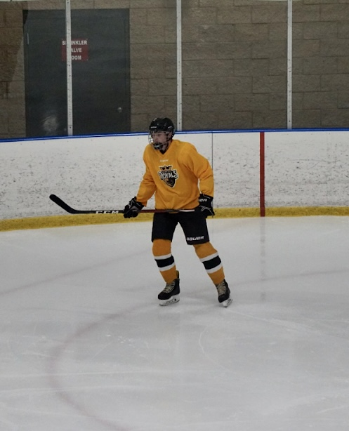
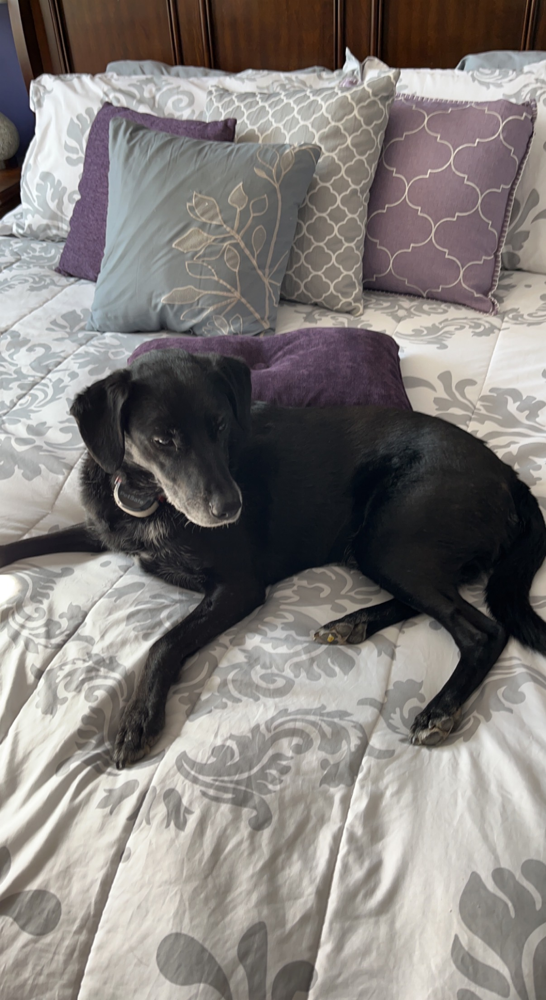

Introduction

Hello, My name is Camden Lewis. This will be an introduction on just some background information about me. I am 17 years old and a junior at Cox Mill High School. My graduation year is 2023. I am very excited to graduate and I plan on attending a four year college. The top schools I want to get into are UNCC, Clemson, NC State, Virginia Tech, University of Georgia, University of South Carolina, UNC Chapel Hill, Appalachian State, UNCW, and a few more. I would like to go to college to eventually become a pediatrician which sucks because of the schooling it requires but if I can get through the schooling there is good money in that industry and that is currently what I want to do. I am from Orlando, Florida in a small city named Ocoee. I like Concord way better than where I am originally from. In Florida it is hot all year and gets really annoying when you wake up in January and it's 80 degrees outside. The weather is also better here because I felt like every day in Florida it was raining. I am glad I moved up here.
Interests

I have many hobbies that I enjoy. Mostly, I like the outdoors. I love being outside, riding bikes, skating, running, etc. I like spending my days outside with my friends. There are some days where I spend the day inside just playing video games or spending time with my family. I like to play NHL, FIFA, Call of Duty, and Rocket League. My number one interest is definitely sports. Some sports I currently play and have played in the past are soccer, hockey, basketball, football, and a few non team sports or activities I enjoy like throwing frisbies, etc. My favorite car is the Volkswagen golf GTI. I want to get it in the falls green color.
Extra
Here is just some extra information about me. I work at a car wash near the mall. I have been working there nearly a year and I have been promoted to team leader there. I am also on the men's varsity socccer team at my school, cox mill. I have been on varsity since sophomore year which is one of my proudest accomplishments. I have two brothers. I am the middle child. My older brother goes to college in Charlotte and my younger brother goes to the same middle school I went to. I have two dogs that are both showcased in the Gallery. The small one is named maui and the bigger dog is named Kona. I also have a small picture showing the sky and my car in the gallery.